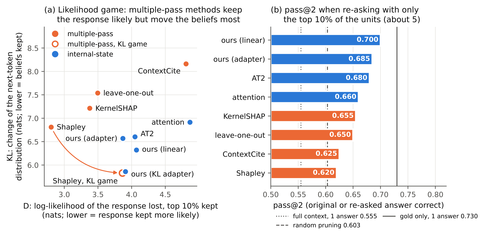

Group meeting · progress update · November 2026
Two projects in progress
Attribution through compression
Which retrieved sentences did the answer need? One forward pass instead of hundreds.
Re-Cal
Decoding along a reference trajectory: pruned self-speculation, then an edit mode.
Quentin Fruytier
The University of Texas at Austin
Attribution · the classic reference
Which retrieved sentences did the answer need? Shapley credit
v(S) = log p(y | x, C_S)
How likely the model’s own answer y is when only the units in S are visible.
φᵢ = E_π [ v(Pᵢ ∪ {i}) − v(Pᵢ) ]
Unit i’s gain over the units Pᵢ before it, averaged over every ordering π.
Setting. HotpotQA with distractors: 10 paragraphs, 2 of them gold, about 50 sentence units. Qwen2.5-1.5B-Instruct answers from the full context, and we attribute its own answer.
| method | extra passes |
|---|---|
| Shapley (permutations) | ≈ 420 |
| KernelSHAP | 256 |
| leave-one-out | n + 1 ≈ 51 |
| ContextCite | 32 |
| attention | 0 |
| AT2 (learned head weights) | 0 |
| ours (learned selector) | 0 |
Top four re-run the model on reduced contexts; the rest read the one full-context pass.
Evaluation: the first 200 HotpotQA validation questions · the answer is correct for 111 of them
2
Attribution · what goes wrong
Shapley is expensive, and its game rewards confidence in the answer, right or wrong
Problem 1 · cost
≈ 420
forward passes per answer, each on a reduced context.
Problem 2 · the game
v scores how likely the model’s own answer is. The model is wrong on 89 of 200 questions even with both gold paragraphs present. There the gold evidence argues against the answer, so Shapley scores it as harmful, and look-alike distractors that push toward the wrong answer earn the credit.
49%
Shapley
66%
ours
gold sentences kept in the top 10%, wrong answers
Example. “What is the adventure in Tunnels and Trolls?” Gold: Arena of Khazan. The model answers “Crusaders of Khazan”, a distractor.
Shapley ranks that distractor 1st and 2nd and the gold sentences 6th and 30th. Re-asked with Shapley’s top 4: still wrong. With ours: correct.
200 HotpotQA validation questions · the model attends to the gold either way (median attention percentile 94 when wrong)
3
Attribution · our method
One learned ordering, read from the pass that wrote the answer, trained on KL
1
Read. Attention from the answer to each unit, from the one full-context pass.
2
Rank. A small selector (673 parameters linear, or a 0.5M adapter) orders the units; keep the first k.
3
Train offline through exact differentiable deletion inside the frozen model, at random budgets k. Zero extra passes at inference.
J(θ) = E_k [ v(top k of πθ) ]
= v(∅) + Σⱼ P[k ≥ j] · m_πθ(j)
A budget-weighted marginal vector along one ordering. Shapley is the plain average over all n! orderings.
v_KL(S) = − Σₜ KL( p_N(·|y<t) ‖ p_S(·|y<t) )
Keep the model’s beliefs, not just one answer.
The identity holds for any game, so the KL-trained selector and the Shapley value of the KL game aim at the same target: one ordering, against the average of all.
m_π(j): gain of the j-th unit over the units before it in π · p_N, p_S: next-token beliefs with the full context and with S only
4
Attribution · the result
Trained on KL, one pass matches the Shapley value of the KL game
5.86 vs 5.83
KL at 10% kept: ours vs KL-Shapley. Paired difference +0.03, 95% CI [−0.32, +0.39].
1 vs 420
forward passes per answer.
0.77 vs 0.66
gold evidence kept in the top 10%: +11 points, 95% CI [+7, +14].
| method | passes | KL at 10% ↓ | gold kept ↑ |
|---|---|---|---|
| Shapley, likelihood game | ≈ 420 | 6.81 | 0.63 |
| Shapley, KL game | ≈ 420 | 5.83 | 0.66 |
| AT2 | 0 | 6.60 | 0.73 |
| ours, KL adapter (0.5M) | 0 | 5.86 | 0.77 |
200 questions · KL in nats, summed over answer tokens · on the KL game every estimator’s KL falls by 0.95–1.19 nats
5
Re-Cal · the concept
Trajectory tracking turns parallel decoding into a supervised problem
1 · Pick a reference
A slow decoder you trust
LLaDA: one token per pass, most confident first. Nemotron-Labs-Diffusion: its own AR mode, greedy.
→
2 · Label for free
Replay it once
Every masked slot at every canvas the walk visits gets a label: does the token it would commit now differ from the one the reference ends with?
→
3 · Commit on a budget
Stay on its path
Predict p̂ᵢ ≈ P[slot i disagrees] from the one forward pass, and commit slots while Σ p̂ᵢ ≤ φ.
PIG and Re-Cal track the sequential decode on LLaDA. On Nemotron the reference is the AR mode, and self-speculation is trajectory tracking with an exact verifier. The rest of this part makes that loop faster.
PIG: Fruytier, Xue, Shakkottai, Sanghavi · arXiv 2610.17375 · Re-Cal on LLaDA: backup B4
6
Re-Cal on Nemotron-Labs-Diffusion-3B · self-speculation
Quadratic self-speculation, pruned to a single candidate block
LINEAR SS · RELEASE LOOP
Draft a block in one forward, verify it with the AR in a second: j + 1 tokens per two forwards.
3.22 / 4.12 TPF · 2 × 32 positions
QUADRATIC SS
Verify, and in the same forward draft a block after every possible accept length c = 0…31: j + 1 tokens per forward.
4.58 / 5.90 TPF · 1,047 positions
PRUNED · C = 1
A PIG-style adapter predicts the accept length, S(c) = P[j ≥ c]; draft only one block, after c₁.
3.26 / 4.25 TPF · 57 positions
If c₁ ≤ j, the commit stops at c₁
The rule committed s₁…s_c₁ and the AR’s next token, then continued from that block: verified tokens past it were thrown away.
If c₁ > j, a miss costs a forward
No block sits at j, so the next forward only drafts. One candidate misses on 26–29% of steps, and the gain over linear SS is gone.
TPF on HumanEval / GSM8K-500, every forward counted · strict verification: the output is the AR greedy walk
7
Re-Cal on Nemotron · fixing C = 1
Keep every verified token, and take the next draft from the anchor block
draft
s₁
s₂
s₃
s₄
s₅
s₆
s₇
s₈
commit (j = 5)
s₁
s₂
s₃
s₄
s₅
a₆
block at c₁ = 3
b₄
b₅
b₆
b₇
b₈
Block 3 was drafted in the same forward, from s₁…s₃. Its guesses past a₆ are appended as the next draft: 3 tokens stale instead of 6.
Always commit j + 1. When c₁ ≤ j, keep all of s₁…s_j and a_{j+1}, not just the tokens up to c₁.
A miss costs no forward. A block at c = 0 is always drafted too (Packed-SS); if j < c₁ it takes over.
Choose the anchor. c₁ = argmax c · S(c): the expected freshness gained.
Running now: the truncation fix alone, then the merged rule.
Packed-SS: Chen and Cai, arXiv 2610.33379 · still lossless: every committed token is the AR’s
8
Re-Cal · the edit mode (EDLM)
One forward verifies the prefix and edits the tail
CONTEXT
Prompt and committed tokens, cached by the frozen base
AR ROWS · GATE OFF
x s₁ s₂ … s_m
Causal, exactly the shipped verifier
EDITOR ROWS · GATE ON
s₁ s₂ … s_m
A copy of the draft, fully visible, same position ids
Out: AR tokens a₁…a_{m+1}, so the exact accept length j. Commit s₁…s_j and a_{j+1}.
Out: per slot, pℓ over the vocabulary: keep κℓ = pℓ(sℓ), edit = argmax pℓ. The edited tail is the next draft.
Inputs
The cached context, the drafted block shown in full, and the AR stream over the same draft.
Model
A per-token-gated LoRA on every layer (r = 64, about 99M parameters); base and LM head frozen.
Gate off
Every projection returns the base output: AR, diffusion and self-speculation are bit-identical.
Nemotron-Labs-Diffusion-3B · a fourth mode next to AR, diffusion and self-speculation
9
Re-Cal · training the edit mode, now
Train it to predict the AR’s token at every drafted slot
LOSS
L(θ) = E[ − Σℓ wℓ log pθℓ(xℓ | z, c) ]
wℓ = exp(−dℓ / γ), γ ∈ {8, 15, ∞}
z: the drafted block. c: the cached context. x: the AR greedy tokens at the block’s positions, free from the lossless loop. dℓ: distance from the commit point. Drafted slots only; keep = predict the shown token.
Optimum: κℓ = 1 − P[slot disagrees | features], Re-Cal’s calibrated reader, plus an edit.
THE LOOP
1. The diffusion mode drafts a block.
2. One forward: AR rows verify, editor rows read the draft.
3. Commit s₁…s_j and a_{j+1}: lossless.
4. Accept any subset of the tail; replace or re-mask the rest.
5. The repaired tail is the next draft; go to 2.
Data. States from the lossless anchored C = 1 loop, plus loop-free blocks of 16, 32 or 64 slots, on 2,000 Nemotron SFT prompts. Next: next-draft acceptance offline: edited tail vs unedited tail vs the loop’s redraft.
AdamW 1e-4, two epochs · one causal prefill per prompt serves all its states · recipe from seven published DLM editors
10
Backup · theory
What the sufficiency ordering keeps, gives up and gains against Shapley
KEEPS
Efficiency
Null player
Affine invariance
GIVES UP, BY DESIGN
Symmetry
Additivity
Marginalism
GAINS
Robustness to duplicated units
Sufficiency optimality
(1 − 1/e) for submodular games
The two are in one-to-one correspondence, and they coincide exactly when the game is additive. Duplicating a sentence splits its Shapley credit; the ordering keeps one copy and moves on.
Working paper: Attribution Through Compression · sections on Shapley vs the sufficiency ordering and their properties
B1
Backup · the full comparison
Every method on both games, at 5% and 10% kept
| method | passes | D 5% | D 10% | KL 5% | KL 10% | gold all | right | wrong |
|---|---|---|---|---|---|---|---|---|
| Shapley · likelihood | ≈420 | 5.67 | 2.81 | 9.20 | 6.81 | 0.63 | 0.75 | 0.49 |
| KernelSHAP · likelihood | 256 | 5.76 | 3.38 | 9.28 | 7.21 | 0.59 | 0.68 | 0.48 |
| leave-one-out · likelihood | n+1 | 6.71 | 3.50 | 10.22 | 7.54 | 0.59 | 0.67 | 0.49 |
| ContextCite · likelihood | 32 | 7.33 | 4.81 | 10.60 | 8.16 | 0.50 | 0.58 | 0.41 |
| Shapley · KL | ≈420 | 6.24 | 3.86 | 8.57 | 5.83 | 0.66 | 0.75 | 0.55 |
| KernelSHAP · KL | 256 | 6.41 | 3.98 | 8.74 | 6.02 | 0.64 | 0.72 | 0.54 |
| leave-one-out · KL | n+1 | 7.26 | 4.84 | 9.35 | 6.59 | 0.71 | 0.78 | 0.62 |
| attention | 0 | 7.51 | 4.87 | 9.81 | 6.91 | 0.69 | 0.76 | 0.62 |
| AT2 | 0 | 6.16 | 4.05 | 9.07 | 6.60 | 0.73 | 0.84 | 0.61 |
| ours, linear | 0 | 6.61 | 4.07 | 8.90 | 6.32 | 0.76 | 0.84 | 0.66 |
| ours, adapter 2.1M | 0 | 6.77 | 3.87 | 9.53 | 6.57 | 0.74 | 0.84 | 0.62 |
| ours, KL adapter 0.5M | 0 | 6.40 | 3.91 | 8.87 | 5.86 | 0.77 | 0.84 | 0.67 |
D and KL in nats, lower is better · gold = share of gold sentences in the top 10%, split by whether the answer was right (111) or wrong (89)
B2
Backup · why the likelihood score misleads
Keeping the answer likely is not keeping the model’s beliefs

KLₜ = p_N(yₜ) · Δ(yₜ)
+ Σ_{w≠yₜ} p_N(w) · Δ(w)
Δ(w) = log p_N(w) − log p_S(w)
A kept set that makes the model more confident in its answer lowers the first term and D, even below zero, but drains the alternatives it was weighing and raises the second.
Querying the model finds such sets. Reading its attention cannot.
200 questions, 10% kept · right panel: pass@2 = the original or the re-asked answer is correct; gold paragraphs alone 0.730
B3
Backup · Re-Cal on LLaDA-8B-Instruct
PIG’s reader without the pairwise estimator, then two rounds

pᵢ ≈ P[xᵢ ≠ final]
PIG.INT, frozen
9.3
Re-Cal, frozen
11.2
Re-Cal, round 2
15.8
HumanEval, TPF* (fastest setting with pass@1 ≥ 0.322) · stars: clairvoyant ceilings, 14.0 → 17.1 after two rounds
B4
Backup · pruning with more candidates
Five candidates keep most of quadratic self-speculation at a fifth of its width
| decoder | positions | miss % | HumanEval | TPF | GSM8K-500 | TPF |
|---|---|---|---|---|---|---|
| linear SS (release) | 2 × 32 | – | 0.793 | 3.22 | 0.892 | 4.12 |
| quadratic SS, all 32 | 1,047 | 0 | 0.780 | 4.58 | 0.894 | 5.90 |
| pruned, C = 1 | 57 | 29 / 26 | 0.780 | 3.26 | 0.898 | 4.25 |
| pruned, C = 3 | 121 | 7 / 6 | 0.805 | 3.98 | 0.890 | 5.16 |
| pruned, C = 5 | 187 | 2.5 / 1.9 | 0.799 | 4.27 | 0.890 | 5.53 |
The rule
Each step keeps the C blocks that maximise expected tokens over expected forwards, under the adapter’s accept-length law.
What it buys
C = 5: +32% / +34% TPF, lossless, 76–85% of the quadratic gain. It beats tuned offsets by 4–6%.
Nemotron-Labs-Diffusion-3B · strict verification · paired 95% accuracy intervals vs linear SS contain 0 for every pruned row
B5